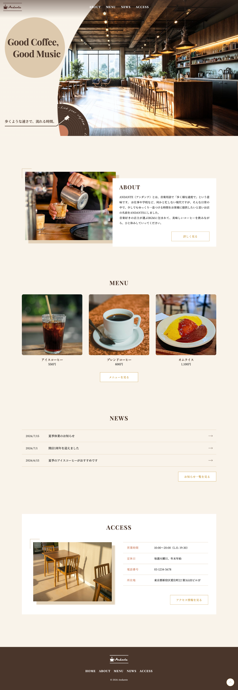
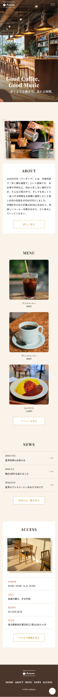

Andante
架空カフェのWordPressサイト
https://intp-sun.site/wdex12/andante/


- 担当範囲
- デザイン・コーディング・WordPress実装
- 使用ツール
- Figma / HTML / CSS / PHP / JavaScript / WordPress
- 制作期間
- 約3週間
- 種別
- カフェサイト
目的と課題
職業訓練校の課題「架空カフェサイトのワイヤーフレーム〜デザインカンプ制作」を、実際に動くサイトとしてWordPressで実装することが目的でした。テーマも既存テーマを使わず、独自に制作しています。ロゴ、ABOUTページ、ACCESSページの基本情報以外の素材提供がなく、情報量が少ない中で間延びした印象にならないサイトに仕上げることが課題でした。
工夫したこと
-
メインビジュアルでの世界観づくり
フリー素材だけでは「カフェ」と店名の「Andante（音楽用語）」の2つの情報を同時に伝えられなかったため、写真をレコードのように円形にトリミングし、さらにレコードの回転アニメーションを加えることで世界観を表現しました。 -
管理画面でのメニュー管理機能の自作
メニューは既存テーマの機能に頼らず、カスタム投稿タイプとして一から実装しました。カテゴリー別の一覧画面では、jQuery UI Sortable＋Ajax（nonce認証）によるドラッグ&ドロップ並び替えができます。 -
表示メニューの選定と制御
トップページに表示するメニュー3件は専用の設定ページから選べるようにし、未選択・重複選択はエラーで保存できない仕様にしました。メニューの個別ページへの直接アクセスも404を返すようにしています。 -
URLの見やすさへの配慮
お知らせ投稿は、日本語タイトルのままだとURLがエンコードされて長くなってしまうため、保存時にスラッグを自動で「news-投稿ID」の形式に変換する処理を実装しました。 -
素材が少ない中でのデザイン補完
学校から提供されたテキストが少なかったため、間延びした印象にならないよう、余白の取り方や写真の装飾に気を配りました。 -
セキュリティ対策の実装
出力エスケープ・直接アクセス防止・セキュリティヘッダー（CSP含む）をコードレベルで実装し、管理画面側もログイン攻撃対策・ファイル改編防止などの設定を追加しました。